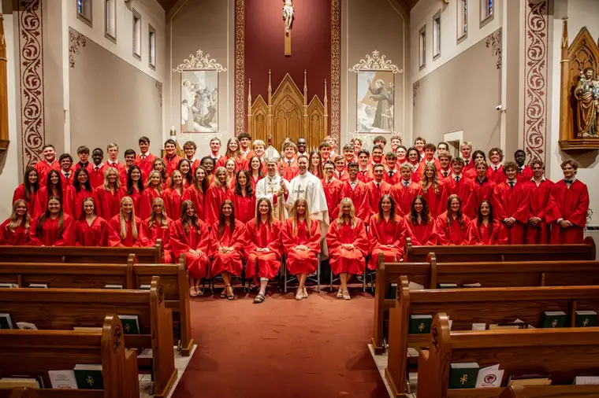

Despite my recent rumination that no educational system can rival a parent’s love, I’d like to highlight something our local Catholic schools does especially well: high-school graduation.
We just experienced it for the last time with our youngest, who donned his red cap and gown early on May 24 to join the class with which he’s traveled since kindergarten for a day of celebration.

All 75 students and their families gathered first for the annual baccalaureate Mass, this year at St. Anthony’s church, on a beautiful spring morning, with Bishop John Folda delivering a homily drawn partly from Acts 20:28-38.
These verses fittingly describe St. Paul’s farewell at Miletus, just before his departure by ship; an adventure that will ultimately end in his death by beheading. Nevertheless, he’s determined to fulfill Christ’s mission to proclaim the Gospel.
Readying for his journey, he implores his friends to “be vigilant,” warning that, after his departure, “savage wolves will come among you, and they will not spare the flock.”
Not cheerful words, but important ones. Paul further predicts that, even from within the Christian community, “men will come forward perverting the truth” to lure the disciples away from Jesus.
But he brings hope, too, commending his friends to God “and to that gracious word of his that can build you up and give you the inheritance among all who are consecrated,” urging them to work tirelessly to help the weak, recalling Jesus’ words that “it is more blessed to give than receive.”
As Paul takes leave, the people begin weeping, throwing their arms around him and kissing him, “for they were deeply distressed that he had said that they would never see his face again.”
Goodbyes can be bittersweet, Bishop Folda acknowledged, focusing on the joy Paul had brought the community and would carry forward; a joy inseparable from love, as he reminded the graduates.
“My friends, as you graduate today…and launch into all kinds of new adventures, the world will offer you many pathways to fun, pleasure and enjoyment. But there’s only one way to lasting joy,” he said, “and that is the way that Jesus offers to us,” which is “first and foremost the way of love.”
And not the self-focused kind of love the world promotes, Bishop Folda emphasized, but that which is other-focused, like the kind Jesus demonstrated by giving his life for us, while also promising eternal joy in heaven to his followers; “the hard path of sacrifice.”
Bishop Folda suggested to the students seeking lasting joy to “look for the path of love” by reaching out to the lonely, and sacrificing for others. “I promise that you will discover joy in doing so.”
He then reiterated an old adage, “What I have kept for myself I have lost, but what I have given is mine forever.” “If we keep our eyes on the one who made us and wants our happiness, not just for a day but for eternity,” he said, true, lasting joy will be ours.
[For the sake of having a repository for my newspaper columns and articles, I reprint them here, with permission, a week after their run date. The preceding ran in The Forum newspaper on June 5, 2023.]